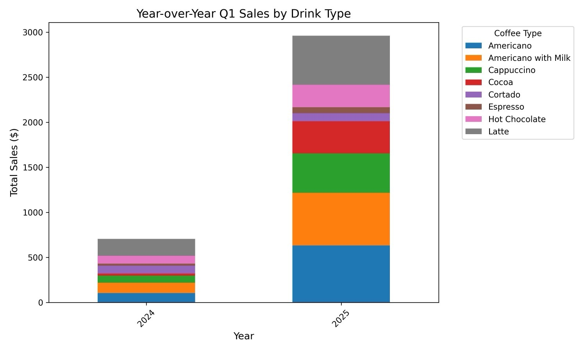
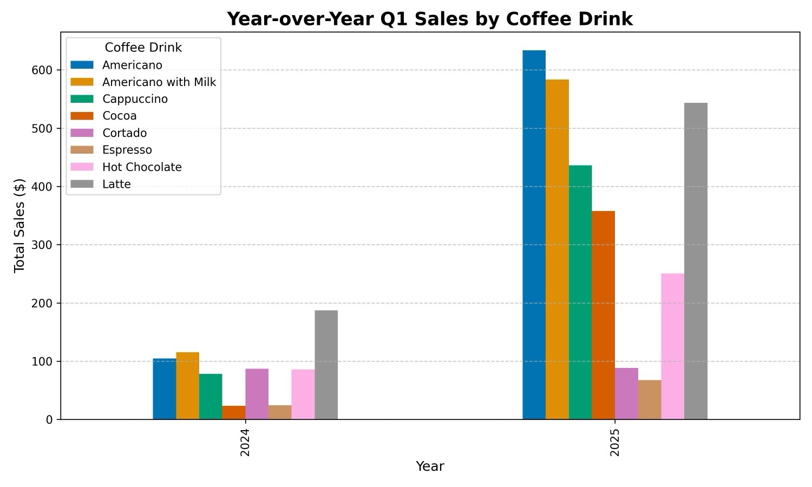

Yansımanın Etkisini Değerlendirme
Yansıma adımını sisteme eklemenin gerçekten değer üretip üretmediğini; nesnel doğru cevaplar, öznel görsel kalite ölçütleri ve rubric tabanlı değerlendirme ile sistematik biçimde ölçme.
Kapsam ve Bağlam
Yansıma çoğu zaman çıktıyı iyileştirir; fakat bu iyileştirme bedelsiz değildir. Sistem ek bir model çağrısı yapar, daha fazla zaman harcar ve bazen daha karmaşık bir akış gerektirir. Bu nedenle bir uygulamada yansıma desenini kalıcı hale getirmeden önce şu soru sorulmalıdır: Bu ek adım gerçekten ölçülebilir kalite artışı sağlıyor mu?
Bu ders, bu soruya iki farklı değerlendirme türüyle cevap verir. Birinci türde doğru cevap bellidir: örneğin bir mağazada belirli ayda kaç ürün satıldığı veya en pahalı ürünün hangisi olduğu ölçülebilir. İkinci türde ise kalite daha özneldir: iki grafikten hangisi daha okunabilir, daha açık ve daha uygun tasarlanmıştır? Dersin ana amacı, bu iki durumda değerlendirme stratejisinin neden farklı olması gerektiğini göstermektir.
Bu Dersin Ana Tezi
Yansımanın değeri sezgiyle değil, değerlendirmeyle belirlenmelidir. Doğru cevabın bilindiği görevlerde kod tabanlı ölçüm daha kolaydır; görsel kalite gibi öznel görevlerde ise rubric tabanlı LLM yargısı daha tutarlı bir değerlendirme zemini sağlar.
Öğrenme Hedefleri
- Yansıma adımının neden ölçülmesi gerektiğini ve bu adımın sisteme getirdiği maliyeti açıklayabilmek.
- Nesnel değerlendirme ile öznel değerlendirme arasındaki farkı örnekler üzerinden ayırt edebilmek.
- Doğru cevap veri kümesi kurarak yansımasız ve yansımalı akışları karşılaştırabilmek.
- Yansıma istemi değiştiğinde değerlendirmeyi yeniden çalıştırmanın neden önemli olduğunu kavrayabilmek.
- LLM yargıcına iki seçenek karşılaştırması yaptırmanın zayıf yönlerini tanımlayabilmek.
- Rubric tabanlı, ikili ölçütlerden oluşan puanlamanın neden daha tutarlı sonuç verdiğini açıklayabilmek.
Ön Koşullar
- Yansıma deseninin ilk çıktıyı eleştirip ikinci bir sürüm üretme fikrine dayandığını bilmek.
- Bir dil modelinin veritabanı sorgusu veya grafik üretim kodu yazabileceğini kavramak.
- Doğru cevaplı bir test kümesi ile yüzde doğruluk ölçümü fikrine aşina olmak.
- Grafik kalitesinin bazen sayısal doğruluktan daha öznel ölçütlere bağlı olduğunu fark edebilmek.
Bu ders kavramsal değerlendirme tasarımına odaklanır. Materyal tam çalıştırılabilir uygulama akışı içermediği için sahte kod hücresi veya yapay çıktı oluşturulmamıştır.
Notasyon ve Terim Tablosu
| Terim | Bu Dersteki Anlamı | Dikkat Edilecek Nokta |
|---|---|---|
| Değerlendirme | Sistemin çıktısını belirli ölçütlere göre ölçme süreci. | Yansımanın faydası ancak karşılaştırmalı ölçümle netleşir. |
| Doğru cevap | Bir soru için önceden bilinen ve karşılaştırmada referans kabul edilen yanıt. | Nesnel görevlerde sistem cevabı buna göre doğru/yanlış sayılır. |
| Yansımasız akış | İlk modelin ürettiği sorgu veya çıktı doğrudan kullanılır. | Daha hızlıdır; fakat ilk üretim hataları taşınabilir. |
| Yansımalı akış | İlk sorgu veya çıktı ikinci bir değerlendirme adımıyla iyileştirilir. | Ek maliyet getirir; bu maliyet ölçülen kalite artışıyla dengelenmelidir. |
| LLM yargıcı | Bir çıktıyı değerlendirmek için kullanılan dil modeli. | Doğrudan ikili kıyaslamada önyargı ve tutarsızlık gösterebilir. |
| Rubric | Kaliteyi küçük, açık ve puanlanabilir ölçütlere ayıran değerlendirme çerçevesi. | İkili ölçütler, geniş puan ölçeklerinden daha tutarlı olabilir. |
| Konum önyargısı | Modelin iki seçenekten birini, özellikle sunum sırası nedeniyle daha sık seçmesi. | İkili karşılaştırmalarda sonuçların güvenilirliğini azaltır. |
Büyük Resim
Yansıma değerlendirmesi, tek bir ölçüm türüne indirgenemez. Önce görevde nesnel doğru cevap olup olmadığına bakılır. Varsa doğru/yanlış ölçümüyle yüzde doğruluk hesaplanır. Yoksa, kalite ölçütleri rubric haline getirilir ve model yargısı daha kontrollü bir forma sokulur.
Nesnel değerlendirme
Doğru cevap bellidir; sistem cevabı doğrudan karşılaştırılır.
- Veritabanı sorgusu sonucunda tek sayı veya belirli ürün adı beklenebilir.
- Doğruluk yüzdesi hesaplamak kolaydır.
- Kod tabanlı ölçüm genellikle yönetilebilir olur.
Öznel değerlendirme
Kalite yargısı daha yoruma açıktır; ölçütleri açıklaştırmak gerekir.
- Grafiklerin okunabilirliği veya estetiği doğrudan doğru/yanlış değildir.
- LLM yargıcı kullanılabilir, fakat dikkatli tasarlanmalıdır.
- Rubric, öznel kaliteyi daha kararlı ölçülebilir parçalara böler.
Nesnel Değerlendirme: Doğru Cevaplı Görevler
Test kümesi kurmak
Nesnel değerlendirmede önce küçük bir soru kümesi ve her sorunun doğru cevabı hazırlanır. Bu sorular, sistemin üretmesi gereken veritabanı sorgularını temsil eder. Aynı sorular yansımasız akışta ve yansımalı akışta çalıştırılır; sonra elde edilen cevaplar doğru cevaplarla karşılaştırılır.
Örnek sonuçları okumak
Aşağıdaki tablo, doğru cevabı bilinen üç örnekte yansımasız ve yansımalı akışın nasıl karşılaştırıldığını gösterir. Amaç tek tek örnekleri ezberlemek değil, değerlendirme mantığını anlamaktır: aynı soru, iki farklı akış, aynı doğru cevap ölçütü.
| Soru | Doğru cevap | Yansımasız yanıt | Yansımalı yanıt |
|---|---|---|---|
| Mayıs 2025'te kaç ürün satıldı? | 1201 | 980 | 1201 |
| En pahalı ürün hangisi? | Airflow sneaker | Airflow sneaker | Airflow sneaker |
| Mağazada kaç farklı stil taşınıyor? | 14 | 14 | 14 |
Bu sonuç, yansımanın sorgu kalitesini anlamlı biçimde artırdığını düşündürür. Fakat asıl değer yalnızca tek ölçümde değildir: üretim istemi veya yansıma istemi değiştirildiğinde aynı değerlendirme tekrar çalıştırılabilir. Böylece istem tasarımı sezgiyle değil, ölçülen performansla yönlendirilir.
Öznel Değerlendirme: Grafik Kalitesi
Her görevde doğru cevap siyah-beyaz biçimde tanımlanamaz. Grafik üretimi buna iyi bir örnektir. İlk görsel de veriyi gösterir, yansıma sonrası görsel de veriyi gösterir; fakat hangisinin daha iyi olduğu okunabilirlik, açıklık ve uygun grafik türü gibi daha öznel ölçütlere bağlıdır.


Buradaki Ölçüm Sorusu
Bu iki grafikten hangisi daha iyidir? Bir insan gözüyle ikinci grafik daha açık görünebilir; ancak sistem geliştirme için bu izlenimi düzenli ve tekrar edilebilir bir değerlendirme yöntemine dönüştürmek gerekir.
LLM Yargıcında İkili Karşılaştırma Sorunu
Öznel görevlerde ilk akla gelen yöntem, iki çıktıyı bir LLM yargıcına verip hangisinin daha iyi olduğunu sormaktır. Çok kipli bir model iki grafiği de görebilir ve bir seçim yapabilir. Ancak bu yaklaşım tek başına yeterince güvenilir değildir.
Bu nedenle iki çıktıyı doğrudan karşılaştırmak yerine, her çıktıyı aynı açık ölçütlere göre tek tek puanlamak daha tutarlı bir değerlendirme sağlar.
Rubric Tabanlı Puanlama
Daha kararlı yaklaşım, grafiği bir kalite rubric'ine göre değerlendirmektir. Modelden geniş ve belirsiz bir 1-5 puan istemek yerine, birkaç küçük ölçüt için 0 veya 1 puan vermesi istenir. Sonra bu ikili puanlar toplanarak toplam kalite skoru elde edilir.
Bu yapı, öznel kaliteyi daha küçük ve denetlenebilir kararlara böler. Model tek bir genel izlenim yerine, her kalite bileşeni için ayrı karar verir. Böylece yansımasız ve yansımalı görseller, aynı rubric üzerinden daha tutarlı biçimde karşılaştırılabilir.
İstemleri Ayarlamak İçin Değerlendirme Döngüsü
Değerlendirme bir defalık rapor değildir; istem geliştirme döngüsünün merkezidir. Üretim istemine veya yansıma istemine yeni bir talimat eklendiğinde, aynı eval kümesi yeniden çalıştırılır. Bu sayede geliştirici, değişikliğin gerçekten performans kazancı sağlayıp sağlamadığını hızlıca görebilir.
Bu yaklaşım, yansıma desenini sistematik mühendislik pratiğine dönüştürür. Amaç yalnızca daha sofistike bir agentik akış kurmak değil, bu akışın gerçekten daha iyi çalıştığını kanıtlayabilmektir.
Yaygın Hatalar
Yansımanın her zaman değerli olduğunu varsaymak
Yansıma ek gecikme ve karmaşıklık getirir. Kazanç küçükse, bazı uygulamalarda bu maliyet gereksiz olabilir.
- Her uygulama için ayrı ölçüm gerekir.
- Tek bir örnek, kalıcı karar vermek için yeterli değildir.
- Performans, istem tasarımına göre değişebilir.
Öznel görevi nesnelmiş gibi ölçmek
Grafik kalitesi gibi konularda tek bir doğru cevap yoktur. Bu nedenle değerlendirme ölçütleri açıkça tanımlanmalıdır.
- Doğrudan ikili karşılaştırma önyargılı olabilir.
- Rubric yoksa modelin kararı belirsiz kalır.
- Geniş puan ölçekleri tutarsız sonuç verebilir.
Son Çıkarımlar
- Yansıma, sistemi yavaşlatan ek bir adım olduğundan, kalıcı hale getirilmeden önce ölçülmelidir.
- Doğru cevaplı görevlerde yansımasız ve yansımalı akışlar, aynı test kümesi üzerinde yüzde doğrulukla karşılaştırılabilir.
- Örnek ölçümde yansımasız akış %87, yansımalı akış %95 doğruluk verir; bu, sorgu kalitesinde anlamlı iyileşmeye işaret eder.
- Grafik kalitesi gibi öznel görevlerde iki çıktıyı doğrudan LLM yargıcına kıyaslatmak güvenilir olmayabilir.
- Rubric tabanlı, ikili ölçütlerle puanlama, öznel değerlendirmeyi daha tutarlı ve tekrar edilebilir hale getirir.
- Eval kümesi kurulduktan sonra üretim ve yansıma istemleri ölçülebilir biçimde ayarlanabilir.